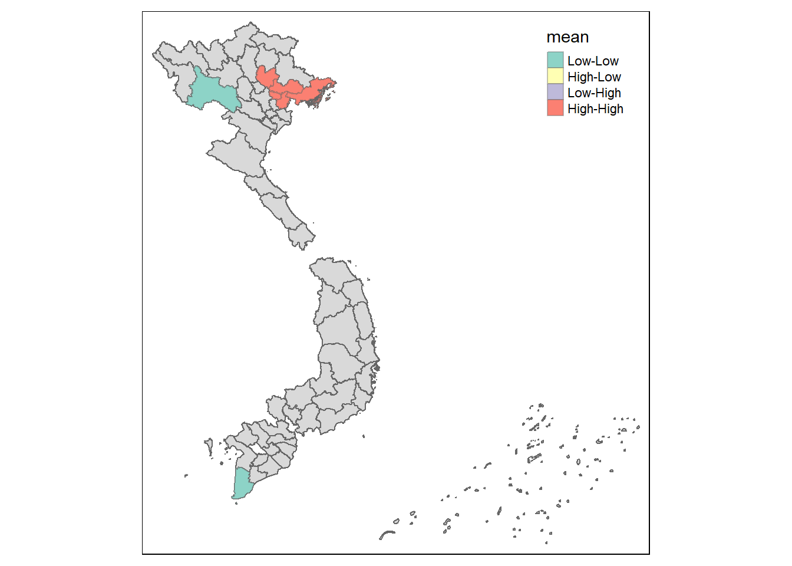
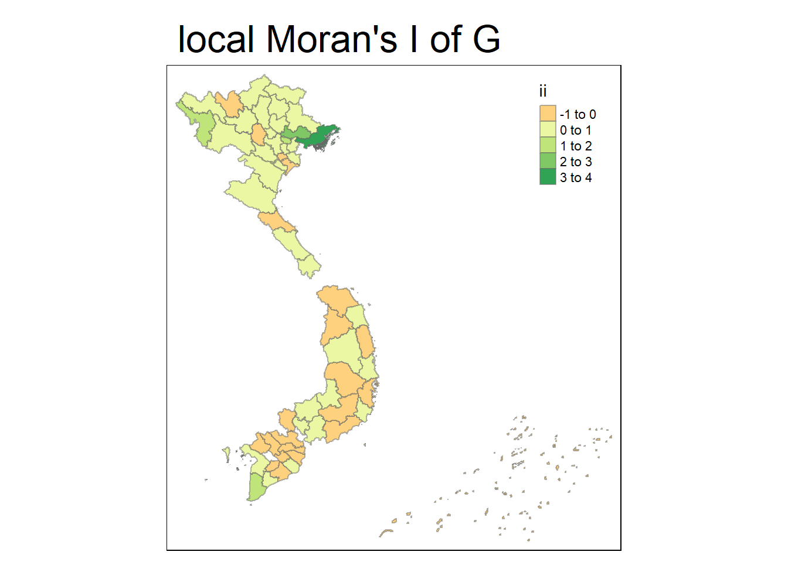
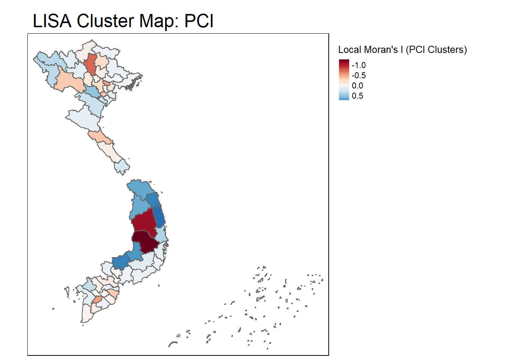
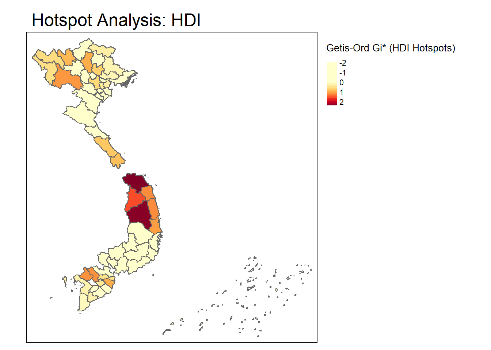

pacman::p_load(sf,tmap,tidyverse,spatstat,raster,sparr,spdep,sfdep,spgwr,exactextractr)Take Home Exercise 3
Reading data
# Import administrative boundary data for vietnam
boundary_data <- st_read(dsn="data/geospatial",
layer = "vnm_admbnda_adm1_gov_20201027")Reading layer `vnm_admbnda_adm1_gov_20201027' from data source
`C:\edwing444\IS415-GAA\Take_Home_Ex\Take_home_ex3\data\geospatial'
using driver `ESRI Shapefile'
Simple feature collection with 63 features and 16 fields
Geometry type: MULTIPOLYGON
Dimension: XY
Bounding box: xmin: 102.144 ymin: 7.180931 xmax: 117.8355 ymax: 23.39221
Geodetic CRS: WGS 84PCI_2012_data <- read.csv("data/aspatial/2012.csv")
PCI_2013_data <- read.csv("data/aspatial/2013.csv")
PCI_2014_data <- read.csv("data/aspatial/2014.csv")
PCI_2015_data <- read.csv("data/aspatial/2015.csv")
PCI_2016_data <- read.csv("data/aspatial/2016.csv")
PCI_2017_data <- read.csv("data/aspatial/2017.csv")
PCI_2018_data <- read.csv("data/aspatial/2018.csv")
PCI_2019_data <- read.csv("data/aspatial/2019.csv")
PCI_2020_data <- read.csv("data/aspatial/2020.csv")
PCI_2021_data <- read.csv("data/aspatial/2021.csv")
PCI_2022_data <- read.csv("data/aspatial/2022.csv")Cleaning data
boundary_data <- boundary_data %>%
dplyr::select(-ADM1_VI,-ADM1_REF,-ADM1ALT1EN,-ADM1ALT2EN,-ADM1ALT1VI,-ADM1ALT2EN, -ADM1ALT2VI, -ADM0_VI,-ADM0_EN,-ADM0_PCODE,-date,-validOn,-validTo,-ADM1_PCODE) %>%
rename(province = ADM1_EN)PCI_2012_data <- PCI_2012_data %>%
dplyr::select(-X,-X.1,-X.2,-X.3,-X.4,-X.5, -X.6, -X.7,-X.8,-X.9,-X.10,-No) %>%
rename(province = Province)PCI_2013_data <- PCI_2013_data %>%
dplyr::select(-X,-X.1,-X.2,-X.3,-X.4,-X.5, -X.6, -X.7,-X.8,-X.9,-PCI.2013.ranking,-No) %>%
rename(province = Province)PCI_2014_data <- PCI_2014_data %>%
dplyr::select(-X,-X.1,-X.2,-X.3,-X.4,-X.5, -X.6, -X.7,-X.8,-X.9,-PCI.2014.ranking,-No) %>%
rename(province = Province)PCI_2015_data <- PCI_2015_data %>%
dplyr::select(-X,-X.1,-X.2,-X.3,-X.4,-X.5, -X.6, -X.7,-X.8,-X.9,-PCI.2015.ranking,-No) %>%
rename(province = Province)PCI_2016_data <- PCI_2016_data %>%
dplyr::select(-X,-X.1,-X.2,-X.3,-X.4,-X.5, -X.6, -X.7,-X.8,-X.9,-X.10,-X.11,-PCI.2016.ranking,-No) %>%
rename(province = Province)PCI_2017_data <- PCI_2017_data %>%
dplyr::select(-Rank) %>%
rename(province = Province)PCI_2018_data <- PCI_2018_data %>%
dplyr::select(-Rank) %>%
rename(province = Province)PCI_2019_data <- PCI_2019_data %>%
dplyr::select(-Rank) %>%
rename(province = Province)PCI_2020_data <- PCI_2020_data %>%
rename(province = Province)PCI_2021_data <- PCI_2021_data %>%
rename(province = Province)PCI_2022_data <- PCI_2022_data %>%
rename(province = Province)Joining data
PCI_2012_data <- boundary_data %>%
left_join(PCI_2012_data, by = "province")
PCI_2012_data <- drop_na(PCI_2012_data)PCI_2013_data <- boundary_data %>%
left_join(PCI_2013_data, by = "province")
PCI_2013_data <- drop_na(PCI_2013_data)PCI_2014_data <- boundary_data %>%
left_join(PCI_2014_data, by = "province")
PCI_2014_data <- drop_na(PCI_2014_data)PCI_2015_data <- boundary_data %>%
left_join(PCI_2015_data, by = "province")
PCI_2015_data <- drop_na(PCI_2015_data)PCI_2016_data <- boundary_data %>%
left_join(PCI_2016_data, by = "province")
PCI_2016_data <- drop_na(PCI_2016_data)PCI_2017_data <- boundary_data %>%
left_join(PCI_2017_data, by = "province")
PCI_2017_data <- drop_na(PCI_2017_data)PCI_2018_data <- boundary_data %>%
left_join(PCI_2018_data, by = "province")
PCI_2018_data <- drop_na(PCI_2018_data)PCI_2019_data <- boundary_data %>%
left_join(PCI_2019_data, by = "province")
PCI_2019_data <- drop_na(PCI_2019_data)PCI_2020_data <- boundary_data %>%
left_join(PCI_2020_data, by = "province")
PCI_2020_data <- drop_na(PCI_2020_data)PCI_2021_data <- boundary_data %>%
left_join(PCI_2021_data, by = "province")
PCI_2021_data <- drop_na(PCI_2021_data)PCI_2022_data <- boundary_data %>%
left_join(PCI_2022_data, by = "province")
PCI_2022_data <- drop_na(PCI_2022_data)Preparing and Computing Data for Global Moran I
# Step 1: Create spatial weights matrix (Queen Contiguity)
coords_global_2012 <- st_centroid(st_geometry(PCI_2012_data)) # Use centroids of polygons
nb_global_2012 <- poly2nb(PCI_2012_data, queen = TRUE) # Create neighbors list using queen contiguityWarning in poly2nb(PCI_2012_data, queen = TRUE): neighbour object has 2 sub-graphs;
if this sub-graph count seems unexpected, try increasing the snap argument.lw_global_2012 <- nb2listw(nb_global_2012, style = "W") # Convert to weights list (row-standardized)#covert to numeric for PCI 2012
PCI_2012_data$PCI.2012 <- as.numeric(PCI_2012_data$PCI.2012)
# Step 2: Compute Global Moran's I
global_moran_2012 <- moran.test(PCI_2012_data$PCI.2012, lw_global_2012)
# Step 3: Print the results
print(global_moran_2012)
Moran I test under randomisation
data: PCI_2012_data$PCI.2012
weights: lw_global_2012
Moran I statistic standard deviate = 1.0588, p-value = 0.1448
alternative hypothesis: greater
sample estimates:
Moran I statistic Expectation Variance
0.080655874 -0.017543860 0.008601753 # Step 1: Create spatial weights matrix (Queen Contiguity)
coords_global_2013 <- st_centroid(st_geometry(PCI_2013_data)) # Use centroids of polygons
nb_global_2013 <- poly2nb(PCI_2013_data, queen = TRUE) # Create neighbors list using queen contiguityWarning in poly2nb(PCI_2013_data, queen = TRUE): neighbour object has 2 sub-graphs;
if this sub-graph count seems unexpected, try increasing the snap argument.lw_global_2013 <- nb2listw(nb_global_2013, style = "W") # Convert to weights list (row-standardized#covert to numeric for PCI 2013
PCI_2013_data$PCI.2013 <- as.numeric(PCI_2013_data$PCI.2013)
# Step 2: Compute Global Moran's I
global_moran_2013 <- moran.test(PCI_2013_data$PCI.2013, lw_global_2013)
# Step 3: Print the results
print(global_moran_2013)
Moran I test under randomisation
data: PCI_2013_data$PCI.2013
weights: lw_global_2013
Moran I statistic standard deviate = 0.34859, p-value = 0.3637
alternative hypothesis: greater
sample estimates:
Moran I statistic Expectation Variance
0.015240668 -0.017857143 0.009015275 # Step 1: Create spatial weights matrix (Queen Contiguity)
coords_global_2014 <- st_centroid(st_geometry(PCI_2014_data)) # Use centroids of polygons
nb_global_2014 <- poly2nb(PCI_2014_data, queen = TRUE) # Create neighbors list using queen contiguityWarning in poly2nb(PCI_2014_data, queen = TRUE): neighbour object has 2 sub-graphs;
if this sub-graph count seems unexpected, try increasing the snap argument.lw_global_2014 <- nb2listw(nb_global_2014, style = "W") # Convert to weights list (row-standardizedComputing Global Moran I
#covert to numeric for PCI 2013
PCI_2014_data$PCI.2014 <- as.numeric(PCI_2014_data$PCI.2014)
# Step 2: Compute Global Moran's I
global_moran_2014 <- moran.test(PCI_2014_data$PCI.2014, lw_global_2014)
# Step 3: Print the results
print(global_moran_2014)
Moran I test under randomisation
data: PCI_2014_data$PCI.2014
weights: lw_global_2014
Moran I statistic standard deviate = 1.2237, p-value = 0.1105
alternative hypothesis: greater
sample estimates:
Moran I statistic Expectation Variance
0.095226635 -0.017543860 0.008493219 # Step 1: Create spatial weights matrix (Queen Contiguity)
coords_global_2015 <- st_centroid(st_geometry(PCI_2015_data)) # Use centroids of polygons
nb_global_2015 <- poly2nb(PCI_2015_data, queen = TRUE) # Create neighbors list using queen contiguityWarning in poly2nb(PCI_2015_data, queen = TRUE): neighbour object has 2 sub-graphs;
if this sub-graph count seems unexpected, try increasing the snap argument.lw_global_2015 <- nb2listw(nb_global_2015, style = "W") # Convert to weights list (row-standardized#covert to numeric for PCI 2013
PCI_2015_data$PCI.2015 <- as.numeric(PCI_2015_data$PCI.2015)
# Step 2: Compute Global Moran's I
global_moran_2015 <- moran.test(PCI_2015_data$PCI.2015, lw_global_2015)
# Step 3: Print the results
print(global_moran_2015)
Moran I test under randomisation
data: PCI_2015_data$PCI.2015
weights: lw_global_2015
Moran I statistic standard deviate = 0.02337, p-value = 0.4907
alternative hypothesis: greater
sample estimates:
Moran I statistic Expectation Variance
-0.015450764 -0.017543860 0.008021871 # Step 1: Create spatial weights matrix (Queen Contiguity)
coords_global_2016 <- st_centroid(st_geometry(PCI_2016_data)) # Use centroids of polygons
nb_global_2016 <- poly2nb(PCI_2016_data, queen = TRUE) # Create neighbors list using queen contiguityWarning in poly2nb(PCI_2016_data, queen = TRUE): neighbour object has 2 sub-graphs;
if this sub-graph count seems unexpected, try increasing the snap argument.lw_global_2016 <- nb2listw(nb_global_2016, style = "W") # Convert to weights list (row-standardized#covert to numeric for PCI 2013
PCI_2016_data$PCI.2016 <- as.numeric(PCI_2016_data$PCI.2016)
# Step 2: Compute Global Moran's I
global_moran_2016 <- moran.test(PCI_2016_data$PCI.2016, lw_global_2016)
# Step 3: Print the results
print(global_moran_2016)
Moran I test under randomisation
data: PCI_2016_data$PCI.2016
weights: lw_global_2016
Moran I statistic standard deviate = 0.51231, p-value = 0.3042
alternative hypothesis: greater
sample estimates:
Moran I statistic Expectation Variance
0.028698495 -0.017543860 0.008147358 # Step 1: Create spatial weights matrix (Queen Contiguity)
coords_global_2017 <- st_centroid(st_geometry(PCI_2017_data)) # Use centroids of polygons
nb_global_2017 <- poly2nb(PCI_2017_data, queen = TRUE) # Create neighbors list using queen contiguityWarning in poly2nb(PCI_2017_data, queen = TRUE): neighbour object has 2 sub-graphs;
if this sub-graph count seems unexpected, try increasing the snap argument.lw_global_2017 <- nb2listw(nb_global_2017, style = "W") # Convert to weights list (row-standardized#covert to numeric for PCI 2013
PCI_2017_data$The.Weighted.PCI.Score.in.2017 <- as.numeric(PCI_2017_data$The.Weighted.PCI.Score.in.2017)
# Step 2: Compute Global Moran's I
global_moran_2017 <- moran.test(PCI_2017_data$The.Weighted.PCI.Score.in.2017, lw_global_2017)
# Step 3: Print the results
print(global_moran_2017)
Moran I test under randomisation
data: PCI_2017_data$The.Weighted.PCI.Score.in.2017
weights: lw_global_2017
Moran I statistic standard deviate = 1.0397, p-value = 0.1492
alternative hypothesis: greater
sample estimates:
Moran I statistic Expectation Variance
0.078207500 -0.017543860 0.008481661 # Step 1: Create spatial weights matrix (Queen Contiguity)
coords_global_2018 <- st_centroid(st_geometry(PCI_2018_data)) # Use centroids of polygons
nb_global_2018 <- poly2nb(PCI_2018_data, queen = TRUE) # Create neighbors list using queen contiguityWarning in poly2nb(PCI_2018_data, queen = TRUE): neighbour object has 2 sub-graphs;
if this sub-graph count seems unexpected, try increasing the snap argument.lw_global_2018 <- nb2listw(nb_global_2018, style = "W") # Convert to weights list (row-standardized#covert to numeric for PCI 2013
PCI_2018_data$The.Weighted.PCI.Score.in.2018 <- as.numeric(PCI_2018_data$The.Weighted.PCI.Score.in.2018)
# Step 2: Compute Global Moran's I
global_moran_2018 <- moran.test(PCI_2018_data$The.Weighted.PCI.Score.in.2018, lw_global_2018)
# Step 3: Print the results
print(global_moran_2018)
Moran I test under randomisation
data: PCI_2018_data$The.Weighted.PCI.Score.in.2018
weights: lw_global_2018
Moran I statistic standard deviate = 1.3862, p-value = 0.08284
alternative hypothesis: greater
sample estimates:
Moran I statistic Expectation Variance
0.109286862 -0.017543860 0.008370859 # Step 1: Create spatial weights matrix (Queen Contiguity)
coords_global_2019 <- st_centroid(st_geometry(PCI_2019_data)) # Use centroids of polygons
nb_global_2019 <- poly2nb(PCI_2019_data, queen = TRUE) # Create neighbors list using queen contiguityWarning in poly2nb(PCI_2019_data, queen = TRUE): neighbour object has 2 sub-graphs;
if this sub-graph count seems unexpected, try increasing the snap argument.lw_global_2019 <- nb2listw(nb_global_2019, style = "W") # Convert to weights list (row-standardized#covert to numeric for PCI 2013
PCI_2019_data$The.Weighted.PCI.Score <- as.numeric(PCI_2019_data$The.Weighted.PCI.Score)
# Step 2: Compute Global Moran's I
global_moran_2019 <- moran.test(PCI_2019_data$The.Weighted.PCI.Score, lw_global_2019)
# Step 3: Print the results
print(global_moran_2019)
Moran I test under randomisation
data: PCI_2019_data$The.Weighted.PCI.Score
weights: lw_global_2019
Moran I statistic standard deviate = 1.0163, p-value = 0.1547
alternative hypothesis: greater
sample estimates:
Moran I statistic Expectation Variance
0.075700054 -0.017543860 0.008418227 # Step 1: Create spatial weights matrix (Queen Contiguity)
coords_global_2020 <- st_centroid(st_geometry(PCI_2020_data)) # Use centroids of polygons
nb_global_2020 <- poly2nb(PCI_2020_data, queen = TRUE) # Create neighbors list using queen contiguityWarning in poly2nb(PCI_2020_data, queen = TRUE): neighbour object has 2 sub-graphs;
if this sub-graph count seems unexpected, try increasing the snap argument.lw_global_2020 <- nb2listw(nb_global_2020, style = "W") # Convert to weights list (row-standardized#covert to numeric for PCI 2013
PCI_2020_data$The.Weighted.PCI.Score <- as.numeric(PCI_2020_data$The.Weighted.PCI.Score)
# Step 2: Compute Global Moran's I
global_moran_2020 <- moran.test(PCI_2020_data$The.Weighted.PCI.Score, lw_global_2020)
# Step 3: Print the results
print(global_moran_2020)
Moran I test under randomisation
data: PCI_2020_data$The.Weighted.PCI.Score
weights: lw_global_2020
Moran I statistic standard deviate = 1.622, p-value = 0.0524
alternative hypothesis: greater
sample estimates:
Moran I statistic Expectation Variance
0.127824021 -0.017543860 0.008032511 # Step 1: Create spatial weights matrix (Queen Contiguity)
coords_global_2021 <- st_centroid(st_geometry(PCI_2021_data)) # Use centroids of polygons
nb_global_2021 <- poly2nb(PCI_2021_data, queen = TRUE) # Create neighbors list using queen contiguityWarning in poly2nb(PCI_2021_data, queen = TRUE): neighbour object has 2 sub-graphs;
if this sub-graph count seems unexpected, try increasing the snap argument.lw_global_2021 <- nb2listw(nb_global_2021, style = "W") # Convert to weights list (row-standardized#covert to numeric for PCI 2013
PCI_2021_data$The.Weighted.PCI.Score <- as.numeric(PCI_2021_data$The.Weighted.PCI.Score)
# Step 2: Compute Global Moran's I
global_moran_2021 <- moran.test(PCI_2021_data$The.Weighted.PCI.Score, lw_global_2021)
# Step 3: Print the results
print(global_moran_2021)
Moran I test under randomisation
data: PCI_2021_data$The.Weighted.PCI.Score
weights: lw_global_2021
Moran I statistic standard deviate = 2.0572, p-value = 0.01984
alternative hypothesis: greater
sample estimates:
Moran I statistic Expectation Variance
0.172186977 -0.017543860 0.008506331 # Step 1: Create spatial weights matrix (Queen Contiguity)
coords_global_2022 <- st_centroid(st_geometry(PCI_2022_data)) # Use centroids of polygons
nb_global_2022 <- poly2nb(PCI_2022_data, queen = TRUE) # Create neighbors list using queen contiguityWarning in poly2nb(PCI_2022_data, queen = TRUE): neighbour object has 2 sub-graphs;
if this sub-graph count seems unexpected, try increasing the snap argument.lw_global_2022 <- nb2listw(nb_global_2022, style = "W") # Convert to weights list (row-standardized#covert to numeric for PCI 2013
PCI_2022_data$The.Weighted.PCI.Score <- as.numeric(PCI_2022_data$The.Weighted.PCI.Score)
# Step 2: Compute Global Moran's I
global_moran_2022 <- moran.test(PCI_2022_data$The.Weighted.PCI.Score, lw_global_2022)
# Step 3: Print the results
print(global_moran_2022)
Moran I test under randomisation
data: PCI_2022_data$The.Weighted.PCI.Score
weights: lw_global_2022
Moran I statistic standard deviate = 2.7947, p-value = 0.002597
alternative hypothesis: greater
sample estimates:
Moran I statistic Expectation Variance
0.240860606 -0.017543860 0.008549129 Preparing Data for LISA
wm_q_2022 <- PCI_2022_data %>%
mutate(nb=st_contiguity(geometry),
wt=st_weights(nb,
style="W"),
.before = 1)Warning: There was 1 warning in `stopifnot()`.
ℹ In argument: `nb = st_contiguity(geometry)`.
Caused by warning in `spdep::poly2nb()`:
! neighbour object has 2 sub-graphs;
if this sub-graph count seems unexpected, try increasing the snap argument.lisa_2022 <- wm_q_2022 %>%
mutate(local_moran = local_moran(
The.Weighted.PCI.Score,nb,wt,nsim=99),
.before=1) %>%
unnest(local_moran)# Create a spatial weights matrix
coords <- st_coordinates(st_centroid(PCI_2012_data))Warning: st_centroid assumes attributes are constant over geometriesnb <- knn2nb(knearneigh(coords, k = 4)) # K-nearest neighborsWarning in knearneigh(coords, k = 4): knearneigh: identical points foundWarning in knearneigh(coords, k = 4): knearneigh: kd_tree not available for
identical pointslw <- nb2listw(nb, style = "W")# Calculate local Moran's I for each region
local_moran_2012 <- localmoran(PCI_2012_data$PCI.2012, lw)
# Add the results to the data for visualization
PCI_2012_data$local_moran_2012 <- as.numeric(local_moran_2012[, "Ii"])Visualising LISA
lisa_sig_2022 <- lisa_2022 %>%
filter(p_ii < 0.05)tm_shape(lisa_2022)+
tm_polygons()+
tm_borders(alpha=0.5)+
tm_shape(lisa_sig_2022)+
tm_fill("mean")+
tm_borders(alpha=0.4)Warning: One tm layer group has duplicated layer types, which are omitted. To
draw multiple layers of the same type, use multiple layer groups (i.e. specify
tm_shape prior to each of them).
tm_shape(lisa_2022)+
tm_fill('ii')+
tm_borders(alpha=0.5)+
tm_view(set.zoom.limits = c(5,8))+
tm_layout(
main.title = "local Moran's I of G",
main.title.size = 2
)Variable(s) "ii" contains positive and negative values, so midpoint is set to 0. Set midpoint = NA to show the full spectrum of the color palette.
Below is my sdep lisa cluster
# Create the LISA cluster map
tm_shape(PCI_2012_data) +
tm_polygons("local_moran_2012",
title = "Local Moran's I (PCI Clusters)",
palette = "RdBu",
style = "cont") +
tm_layout(main.title = "LISA Cluster Map: PCI",
legend.outside = TRUE)Variable(s) "local_moran_2012" contains positive and negative values, so midpoint is set to 0. Set midpoint = NA to show the full spectrum of the color palette.
# Calculate Getis-Ord Gi* statistic for each region
gi_star <- localG(PCI_2012_data$PCI.2012, lw)
# Add Gi* values to the data
PCI_2012_data$gi_star <- as.numeric(gi_star)
# Create a hotspot map
tm_shape(PCI_2012_data) +
tm_polygons("gi_star",
title = "Getis-Ord Gi* (HDI Hotspots)",
palette = "YlOrRd",
style = "cont") +
tm_layout(main.title = "Hotspot Analysis: HDI",
legend.outside = TRUE)